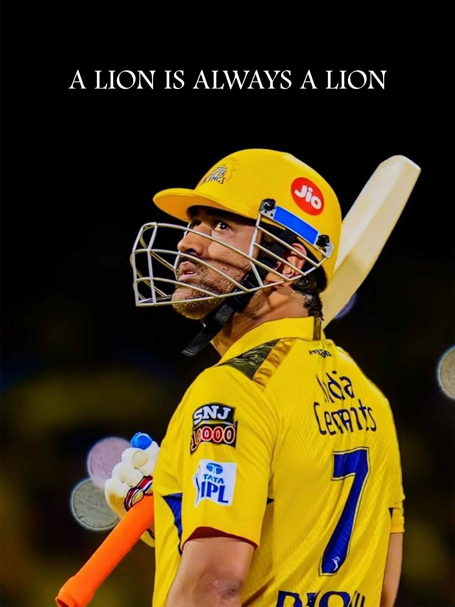
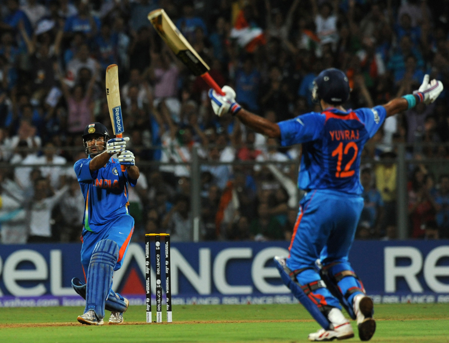
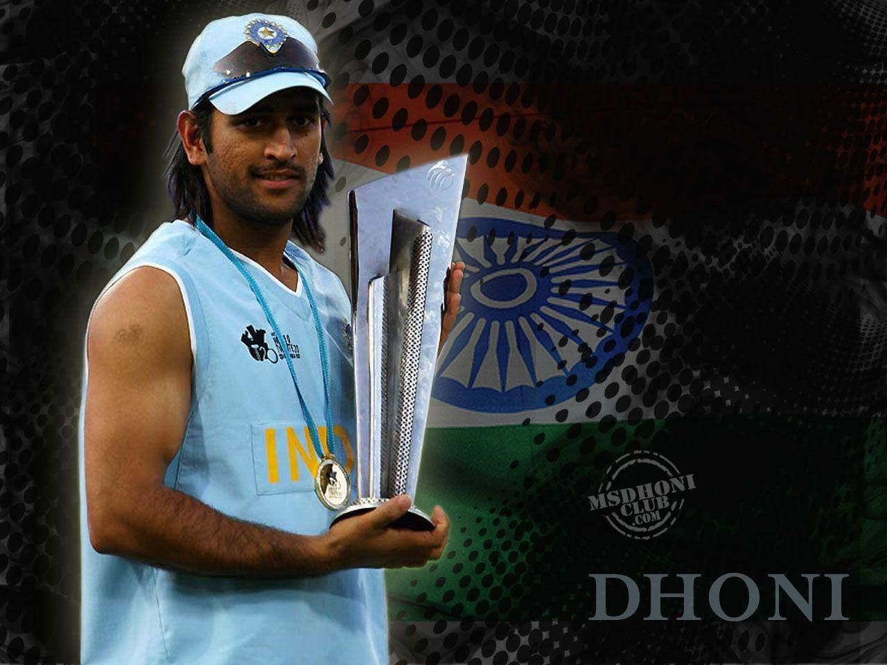
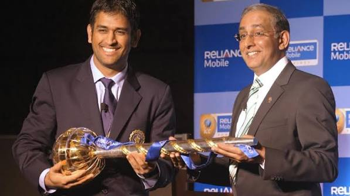
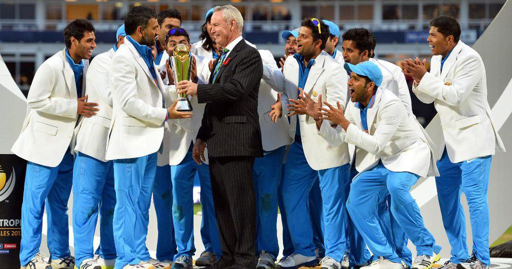
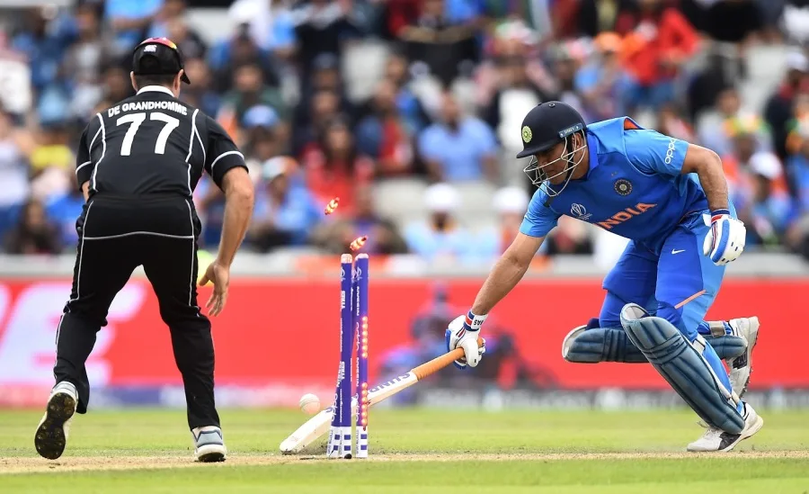

1981
Born in Ranchi
July 7, 1981 - A legend was born in the small town of Ranchi, Jharkhand.
07
Captain Cool. The Finisher. Wicketkeeper Extraordinaire. A leader who transformed Indian cricket and gave us moments we'll never forget.

2007 - 2017
A ticket collector with dreams, who became India's most successful captain
July 7, 1981 - A legend was born in the small town of Ranchi, Jharkhand.
Made his ODI debut against Bangladesh on December 23, 2004.
Appointed captain of the Indian T20 team and won the inaugural ICC T20 World Cup.
Finished the final with an unforgettable six and lifted the ICC Cricket World Cup.
Guided India to the ICC Champions Trophy title in England, becoming the first captain in cricket history to win the ICC T20 World Cup, Cricket World Cup, and Champions Trophy.
On August 15, 2020, MS Dhoni announced his retirement from international cricket after an extraordinary career spanning over 15 years, leaving behind a legacy as one of India's greatest captains and finishers.
Only captain to win T20 WC, ODI WC, and Champions Trophy.
Led India to become the No.1 Test team in the ICC rankings in 2009.
One of the most successful captains in IPL history with Chennai Super Kings.
Padma Shri
Highest 10th Wicket Partnership
ICC ODI Team of the Year
Rajiv Gandhi Khel Ratna
Highest Score
Catches
Highest Score
Catches
Highest T20I Score
Player of the Match

With 4 runs needed, Dhoni smashed Nuwan Kulasekara over long-on for a historic six, ending India's 28-year wait for the ICC Cricket World Cup.

Dhoni trusted Joginder Sharma to bowl the final over. Misbah-ul-Haq's scoop landed in Sreesanth's hands, and India became the first ICC T20 World Champions.

Under Dhoni's captaincy, India reached the No.1 position in the ICC Test rankings for the first time.

India defeated England to win the ICC Champions Trophy, making Dhoni the only captain to win all three major ICC white-ball trophies.

On August 15, 2020, Dhoni announced his retirement with the emotional message, "Thanks a lot for your love and support throughout."

Chennai Super Kings lifted their fifth IPL title under Dhoni's leadership, equalling the record for the most IPL championships.
His legacy goes beyond trophies and records. He redefined how Indian cricket approached pressure situations. The calmness with which he handled the most intense moments earned him the name "Captain Cool." He trusted youngsters when others didn't, backed them through failures, and created a generation of match-winners.
"I have always believed that process is more important than results"